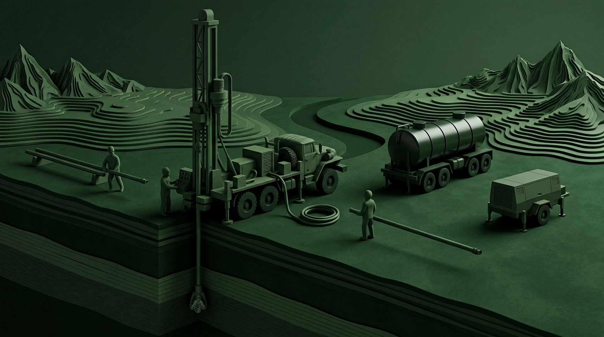

Гидрогеологическое заключение и проектирование
Инженерная и проектная основа объекта, работа с исходными данными и фондовыми материалами.
Подробнее
Проектные, разрешительные, буровые и пусконаладочные работы по объектам водоснабжения, водоподготовки, очистки и водозабора.
Инженерная и проектная основа объекта, работа с исходными данными и фондовыми материалами.
ПодробнееРазрешительная часть, проектирование ЗСО, сопровождение водозаборов и аудит текущего состояния.
ПодробнееБуровые работы по новым скважинам с увязкой дальнейшей эксплуатации и инженерных решений.
ПодробнееПодбор и проектная увязка технологических решений по водоподготовке, запуск и сопровождение объекта.
ПодробнееПроектные и технические решения по очистным сооружениям, увязка оборудования и вывод объектов на рабочий режим.
ПодробнееНастройка логики управления, запуск систем и вывод объекта на стабильный режим.
Подробнее